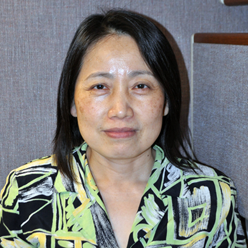

<div class="container">
    <div class="row">
        <div id="speaker-detail" class="col-lg-6 col-lg-offset-3">
            <div class="row">
                <button title="Close (Esc)" type="button" class="mfp-close">×</button>
                <div class="col-md-4 col-lg-4">
                    
                    <br />
                </div>
                <div class="col-md-8 col-lg-8">
                    <h2>Mei-Hsiu Ling, 凌美秀 博士</h2>
                    <h3>Senior Director, Vertex Pharmaceuticals</h3>
                    <p>Dr. Mei-Hsiu Ling received a B.S in Math from National Tsing Hua University and a Ph.D. In Statistics from U.C. Berkeley.  She then started working in the pharmaceutical industry.  Prior to Vertex, she worked at Schering-Plough and Novartis.  She has been involved in late phase drug development, including antibiotics, antiviral (HCV, HIV), anti fungal, and respiratory (Asthma, COPD, Cystic Fibrosis).  At Vertex, she is the Cystic Fibrosis statistics franchise head responsible for all statistical support for Cystic Fibrosis drug development.  She is also the acting department head for the statistical programming group. She currently serves as the president of Monte Jade New England (mj-ne.org).
                </div>
            </div>
        </div>
    </div>
</div>
